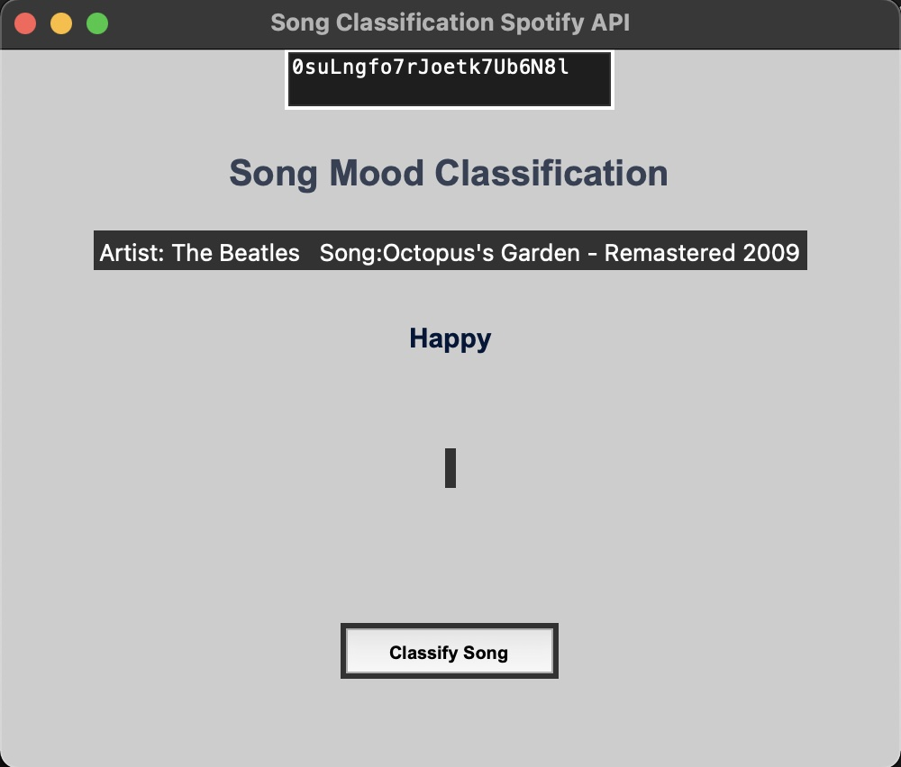

This project utilizies the Spotify API and the data they provide to classify a song and the Keras library in Python for the neural net.
First, I will describe the classification problem that this project attempts to give a solution to. Music classification can be very difficult given the subjective nature of music; every listener to a song can have a different reaction. There are many methods used for classification, but in this project, the moods are divided according to psychologist Rober Thayer' tradtional model of mood. This model divides songs based on a range of energy and stress to happy and sad.

Generally, faster tempo songs correlates to a high-energy or happy song, slower tempos implies low energy or sad songs. Loud songs could indicate anger while quiet/soft songs can indicate sad songs. High pitch can indicate happiness, while low pitch can indicate sadness, and so on. Through all these categories, we can then attempt to come to more of an objective classification of a song. In this project, I classify into the four main categories seen in the image above; energetic, happy, calm, and sad.
Spotify provides a plethora of data on all their cataloged songs in which they have
a series of features for each song. Below is a copy-paste of their descriptions of
their audio features.
However, you will need to get Spotify Credentials in order to access the Spotify API needed for this project. It is pretty simple to do, you just need to create a developer account (which is free) and then activate a project to get your credentials. You can follow the link below to learn more about how to do that.
Spotify developer
Before building the model, you'll first want to normalize all the data to be in the range of [0,1] using the MinMaxScaler function in from the scikit library. This normalized data is then used to create the training and testing data. Below is the code.
df = pandas.read_csv('data_moods.csv')
X = df[df.columns[6:-3]]
Y = df['mood']
X = MinMaxScaler().fit_transform(X)
X2 = np.array(df[df.columns[6:-3]])
encoder = LabelEncoder()
encoder.fit(Y)
encoded_y = encoder.transform(Y)
train_X, test_X, train_Y, test_Y = train_test_split(X, encoded_y, test_size=.2, random_state=15)
For the neural net, you can use just a simple model using the Keras library and still get a fairly accurate model. It has 8 nodes with the input layer for 10 features (those in the bullet points above) and 4 nodes for the output layer and the Adam optimizer (another viable optimzer you can use is SVD).
def modelo():
model = Sequential()
model.add(Dense(8,input_dim=10,activation='relu'))
model.add(Dense(4,activation='softmax'))
model.compile(loss='categorical_crossentropy',optimizer='adam',metrics=['accuracy'])
return model
You can play with the number of input and output nodes and adding more layers. However, through my experimentation, I found that this simple model was the most accurate.
If you want to see the accuracy of your model, you can create an estimation of the model with the KerasClassification function and then use KFold cross validation to get the accuracy of this estimation, in which 10 splits are used. I also ran it with 400 epochs, which you can change if you'd like (but try to keep up above 250). Using the code below, I get an accuracy of 82% and a standard deviation of 5.12% for the model above.
estimator = KerasClassifier(build_fn = modelo, epochs = 400, batch_size = 200)
k_fold = KFold(n_splits = 10, shuffle = True)
res = cross_val_score(estimator, X, encoded_y, cv = k_fold)
print("Accuracy of model: %.2f%%, standard deviation: %.2f%%" % (res.mean()*100, res.std()*100))
Using this estimation, you can also create a confusion matrix to get a detailed response of what your model is good and bad at classifying.
estimator.fit(X_train,Y_train)
y_preds = estimator.predict(X_test)
cm = confusion_matrix(Y_test,y_preds)
ax = plt.subplot()
seaborn.heatmap(cm,annot=True,ax=ax)
labels = target['mood']
ax.set_xlabel('Predicted labels')
ax.set_ylabel('True labels')
ax.set_title('Confusion Matrix')
ax.xaxis.set_ticklabels(labels)
ax.yaxis.set_ticklabels(labels)
plt.show()
Here is the confusion matrix for the model I used.
From this, we can see by looking at the left diagnoal that the model is fairly good at classifying each mood. However, we see there is some trouble with Happy songs, as seen by the lower score. It also has some possibility of mixing up Energetic and Happy songs and Calm and Sad songs, as seen by the tiles with a score of 14 and 6, respectively.
Then you'll want to create a GUI to make it easier to display and enter songs
(code can be found in the github in the mood_prediction.py file).
You'll notice the blank square box in the GUI below:
For this, you need the spotify ID for the specific song that you want.
To do this, you'll want to click the three dots at the end of a song on Spotify.
Then, hover over share and click "Copy Song Link".
To get the ID, go to anywhere you can paste the link and copy the part after "...track/" and before "?si=..." as seen below:
Copy the song ID and then paste it in the blank box in the GUI and click the button "Classify Song".

We see here that according to our model, the song Octopus's Garden by The Beatles is a happy song.
And with that, you've got a music mood classfier!
Here's my github with all the needed files.
As humanoid robots become more and more advanced, they are also becoming more human-like. To make a humanoid robot even more human-like, you'll want it to be able to accurately display emotions when listening to music. While the model above is very rudimentary compared to what would be needed for a sophisticated humanoid robot, this takes us in the direction of getting a robot that is able to display emotions. A better version of this model would be one that outputs the real-time mood of a song as it plays (which is what I originally wanted to do, but was much more complicated than I expected). With this output, you could command the muscles in the robot's face to move such that it creates the expected emotion.